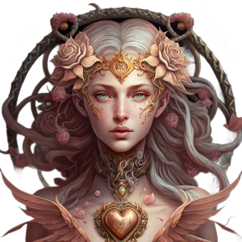

-Within the Tarot community in general and in the West specifically, the Rider-Waite Tarot is a classic and arguably the most well-known deck. In addition to becoming the norm for more than 90% of Tarot decks currently in use, this deck is regarded as redefining the standard for tarot cards and has a special feature over the Marseilles standard, which calls for all 78 cards.
-In tarot, all drawings are visual. All users, including those who are unfamiliar with Tarot and experienced readers, can benefit from using the Rider-Waite Tarot deck. When learning about Tarot, the majority of professional readers worldwide feel that one needs to possess a deck of The Rider-Waite Tarot cards or one of its variants.
This is a good reading to simply 'get a snapshot' of how things are with you generally, at this moment in time.
How to Read Tarot Cards
1. Choose Topic
2. Click on the spread button
3. Pick any three cards.
4. Press the button to view the outcomes.

1. Is it accurate to read tarot?
Tarot merely mirrors your true experiences; the orientation remains crucial.
2. Why do we regard one individual as correct and another as incorrect?
You can't help but become more confused as you search more and receive more contradictory information.
The reader spreads the cards for you, but you don't trust the outcome. It is impossible to have faith in others if you lack confidence in yourself. And those questions usually make readers feel very uneasy.
3. Do tarot cards offer sound advice?
It's crucial to consider your perspective on the issue. If you choose to heed the advice of the Tarot, that is another story. The Tarot only presents the facts. You are the one who makes all of the decisions. As someone once said, "Let yourself be the one to decide the cards, not let the cards decide your destiny."
4. Relax and enjoy this moment
If you have any questions, please contact me: tarotbychaam@gmail.com